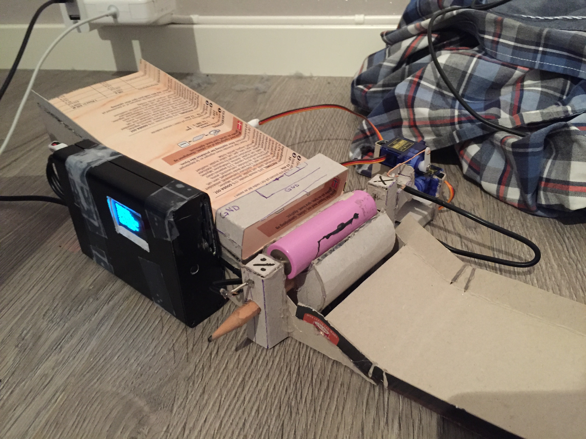
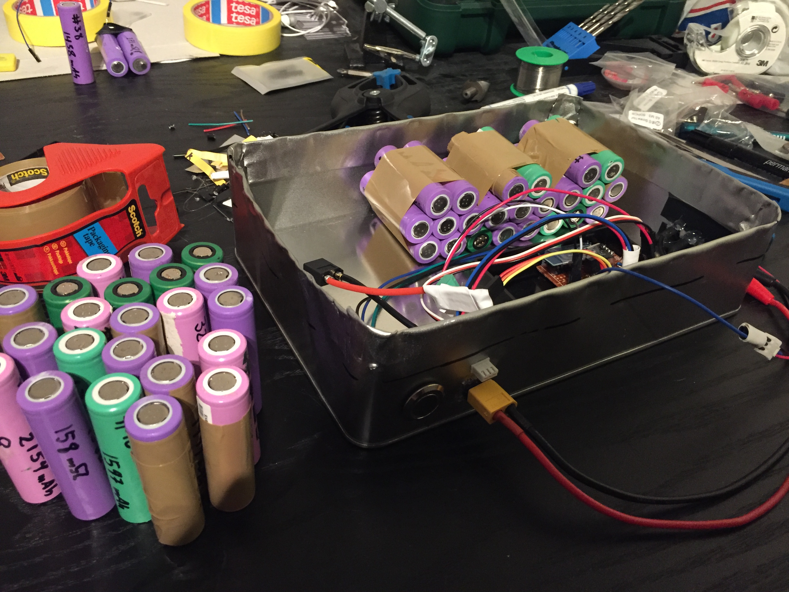

Battery Tester
Lithium Ion batteries of type 18650 are commonly found in old laptop batteries, so they can be aquired for free at recycling stations. However, old cells can be bad, so I built a battery tester that measures the quality of cells.
Up to 10 cells can be put on the loading side. The machine loads one cell at a time, discharge it, charge it back up, logs the capacity and internal resistance, and loads a new cell automatically.
The bad cells were discarded, while the good cells were optimally arranged in a pack acording to each cells remaining capacity.

Each cell can be inspected more closely. On this graph we see the energy content VS cell voltage in blue, and the internal resistance VS cell voltage in green.

I used these cells to make my own electric longboard. I used my phone as the throttle by coding an app. It sent the throttle signal to a bluetooth module on the longboard.
Even though it looks like shit, it taught me the basics of electronics, soldering, app development, and arduino. I used it as my commute to work one summer.